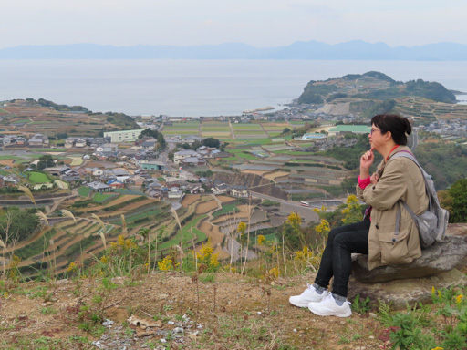
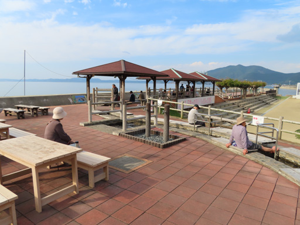

日本 九州 長崎縣、島原半島、雲仙市內有三個景點，只需要一條路線的巴士，就可以安排在一天內輕輕鬆鬆遊覽完畢。
行程相當豐富, 各景點有不同風景。
這三個景點就是：
第一: 愛野展望台 – 這裡可以看到 壯麗海景。
第二: 南串山棚畑 展望台 – 可以俯瞰 層層疊疊、漂亮的梯田。
第三: 小浜 – 可以 一邊享受足湯, 一邊望著大海。如果遇上好天氣，更可以看到漂亮日落。
*****
這個旅程在 諫早市 嘅 諫早駅前巴士中心 (諫早駅前ターミナル) 出發, 乘搭嘅巴士路線是「諌早駅前 – 口之津」線。
「諌早駅前 – 口之津線」班次都算多，每天由早上6:30 開始, 平均每45分鐘就有一班車，交通尚算方便。一天時間是足夠的，而且相當輕鬆寫意。
諫早駅前巴士中心的位置


「諌早駅前 – 口之津線」巴士時間表


如果想行程輕鬆一些, 當然最好早些出發啦!
至於行程安排, 建議遊覽次序是：
第一：愛野展望台。
第二：南串山棚畑 展望台，和
第三：小浜。
將小浜安排在最後一個景點，就是如果遇上好天氣，就可以一邊享受足湯，一邊欣賞日落，簡直係人生一大快事！
愛野展望台
巴士在諫早駅前巴士中心開車後, 10分鐘便抵達今日第一個景點 – 愛野展望台
在愛野巴士站 下車後，愛野展望台 就在馬路對面。
愛野展望台可以眺望 一望無際的有明海及彎彎的千千石海岸, 風景相當漂亮。
展望台斜對面的小山坡上有一個山本美術館 (Yamamoto Museum), 如果時間許可, 可以順道一遊。
在這裡停留45分鐘至一小時, 返回剛才下車的愛野巴士站。繼續乘搭「諌早駅前 – 口之津線」下一班嘅巴士 往今日第二個景點 – 南串山棚畑展望台。
南串山棚畑展望台
在愛野巴士站登上巴士，會先經過小浜，約一小時便抵南串山棚畑。
登上南串山棚畑展望台的行程，請參考我上一個影片。在這裡不在重複了！
欣賞完彎彎曲曲、層層疊疊、依山而建的南串山梯田，可以在京泊巴士站 或 水ノ浦巴士站乘巴士返回小浜。
雲仙市 小濱溫泉區
登上相反方向的「口之津 – 諌早駅前線」 巴士, 約 40分鐘便抵達小浜。
抵達小浜後, 在這裡吃午餐。
小浜餐廳不多, 最佳選擇肯定是小浜巴士站大樓地下的 New Obama (ニュー小浜) 餐廳, 既好味, 價錢又實惠!
吃完午餐, 可以開始小浜的行程。
小浜景點也很多, 可以逗留半天遊覽。
漫步 小浜溫泉街。
參觀炭酸泉。小濱的炭酸泉非常特別, 是一個冷溫泉。
小浜歴史資料館。這裡有兩個值得參觀的地方。第一個是小浜温泉的源泉; 第二個是本多湯太夫宅邸。
小浜温泉源泉 是一個間歇泉, 平時不斷冒出濃濃的煙, 當能量及壓力累積到某一點時, 便會向天嘖射出熱騰騰的水柱, 十分震撼。
本多湯太夫宅邸經有160年歷史, 現作為歷史遺產保存下來, 供旅客參觀 。
宅邸內部份地方更陳列了小浜鎮過往的歷史: 包括交通、溫泉和觀光等等特色, 很值得遊覽。
最後壓軸節目是設於海濱的 小濱溫泉足湯場 (Obama Onsen)。可以 一 邊望著大海一邊享受足湯。
小濱溫泉足湯場全長105米, 是日本最長、最大的足湯場。湧泉口多達30多個, 湧出的泉水約攝氏100度, 也是全日本最高溫的溫泉。
足湯場內除了最常見的坐式足湯外, 更有用鵝卵石鋪設的石春路腳底按摩足湯。
由於從湧泉口引進足湯場的泉水高達攝氏100度, 所以越接近湧泉口, 泉水越熱。正因如此, 所有旅客都集中在前一段的足湯場享用泡腳。相反, 下半段的足湯場則無人問津。
如果遇上好天氣，這裡更可以看到漂亮日落。
在小濱溫泉足湯場 享用完足浴, 在小浜巴士站就可以乘巴士返回 諫早市。
日本 九州 長崎縣三景點一天輕鬆遊就在這裡結束了!
*****
謝謝收看!
如果喜歡, 請免費訂閱我的頻道, 按個 LIKE 和留下評論!